Navegação Rápida
MySQL
É o sistema de gerenciamento de banco de dados relacional (RDBMS) incluído no XAMPP. No pacote atual, ele é substituído pelo MariaDB (um fork compatível), mas a interface e comandos são idênticos.
Acessando o MySQL no XAMPP
No painel de controle do XAMPP, clique em shell que abrirá a interface de linha de comando do XAMPP.
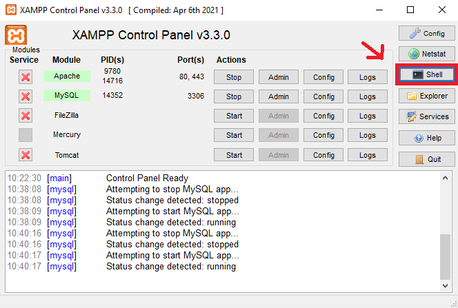Digite o seguinte comando para acessar o MySQL:
# mysql -u root
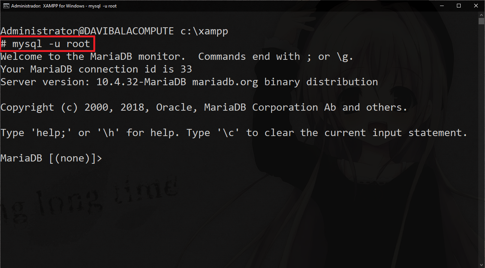Esse comando irá acessar o MySQL como o usuário root sem senha (padrão no XAMPP).
Agora você pode executar comandos SQL diretamente no prompt do MySQL.
Principais Comandos do MySQL
Aqui estão alguns comandos básicos do MySQL que você pode usar:
-
# SHOW DATABASES;
- Lista todos os bancos de dados disponíveis.
-
# USE nome_do_banco;
- Seleciona um banco de dados para usar.
-
# SHOW TABLES;
- Lista todas as tabelas no banco de dados selecionado.
-
# SELECT * FROM nome_da_tabela;
- Recupera todos os registros de uma tabela.
-
# INSERT INTO nome_da_tabela (coluna1, coluna2) VALUES (valor1, valor2);
- Insere um novo registro em uma tabela.
-
# UPDATE nome_da_tabela SET coluna1 = valor1 WHERE condição;
- Atualiza registros existentes em uma tabela.
-
# DELETE FROM nome_da_tabela WHERE condição;
- Remove registros de uma tabela com base em uma condição.
-
# CREATE DATABASE nome_do_banco;
- Cria um novo banco de dados.
-
# DROP DATABASE nome_do_banco;
- Remove um banco de dados existente.
-
# EXIT;
- Sai do prompt do MySQL.
Exemplos de Uso dos comandos MySQL
Aqui estão alguns exemplos práticos de como usar os comandos do MySQL:
- Listar todos os bancos de dados: 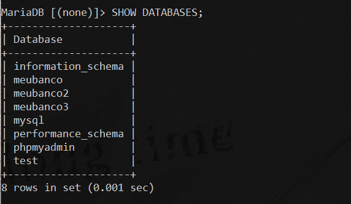
- Selecionar um banco de dados: 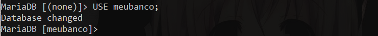
- Listar tabelas em um banco de dados: 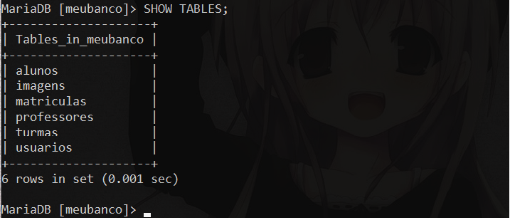
- Recuperar todos os registros de uma tabela: 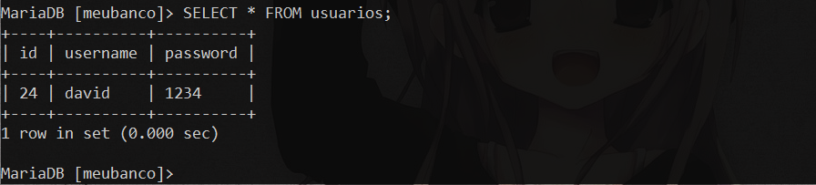
- Inserir um novo registro em uma tabela: 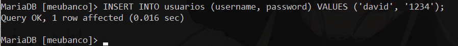
- Atualizar um registro existente: 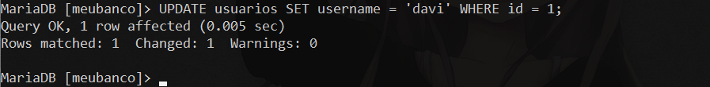
- Deletar um registro: 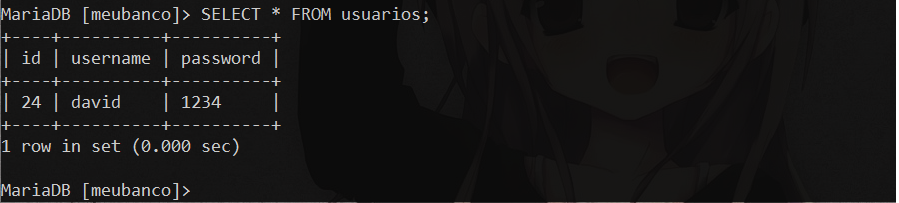
- Criar um novo banco de dados: 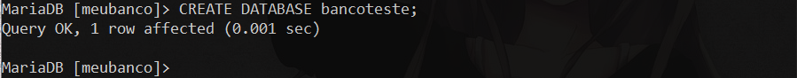
- Deletar um banco de dados: 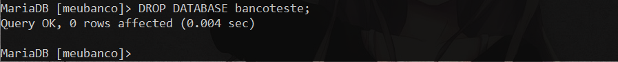
- Sair do MySQL: 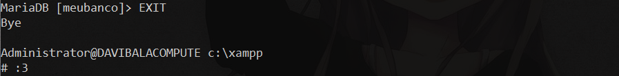